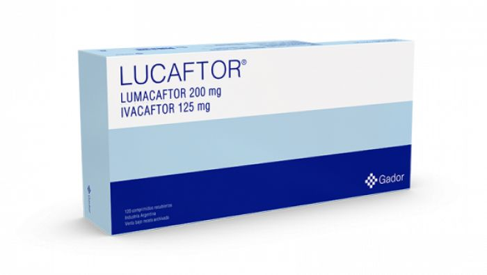
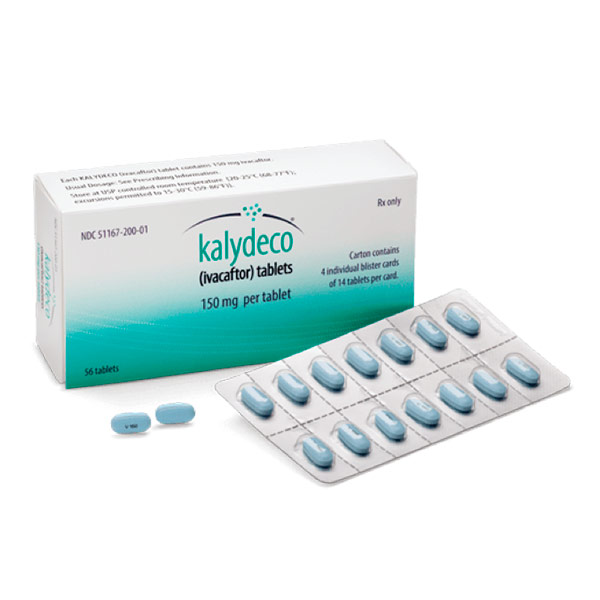

- Medicaments que es dirigeixen a les mutacions genètiques
- Antibiòtics per tractar i prevenir les infeccions pulmonars
- Antiinflamatoris per disminuir la inflor de les vies respiratòries dels pulmons
- Drogues que dilueixen la mucositat, com la solució salina hipertònica que ajuda a treure la mucositat tossint, cosa que pot millorar la funció pulmonar
- Medicaments inhalats anomenats broncodilatadors que poden ajudar a mantenir obertes les vies respiratòries relaxant els músculs al voltant dels bronquis
- Enzims pancreàtics orals per ajudar que el teu tracte digestiu absorbeixi els nutrients
- Estovadors de femta per prevenir el restrenyiment o l'obstrucció intestinal
- Medicaments reductors d'àcid per ajudar que els enzims pancreàtics funcionin millor
- Medicaments específics per a la diabetis o la malaltia hepàtica
Els medicaments lumacaftor i ivacaftor s'usen per tractar certs tipus de fibrosi quística
 